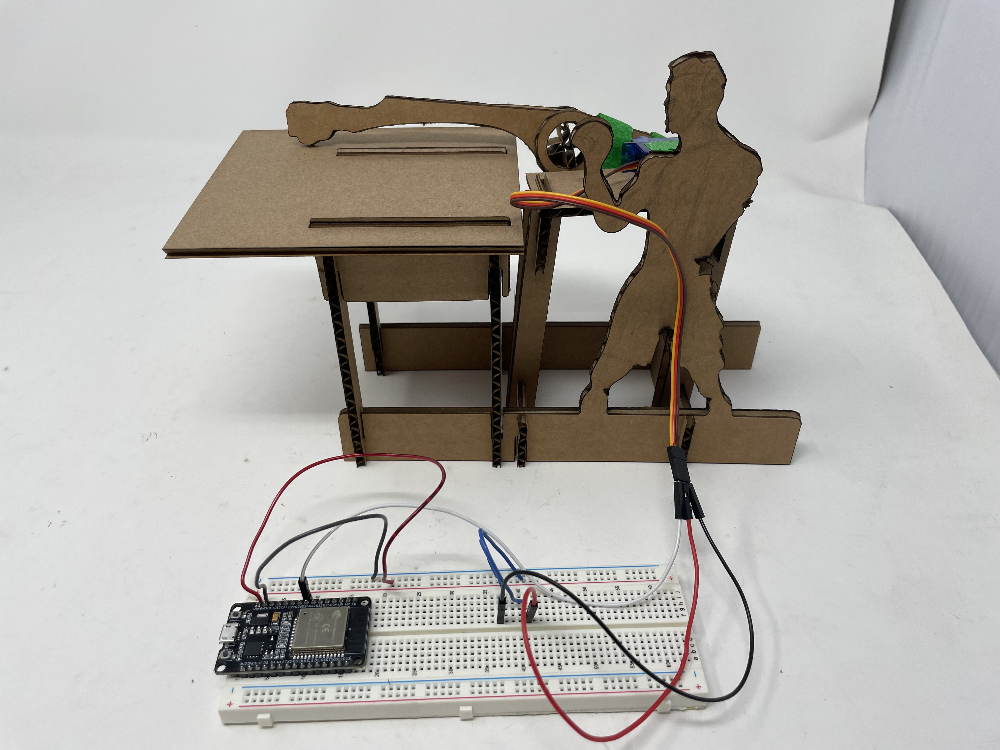
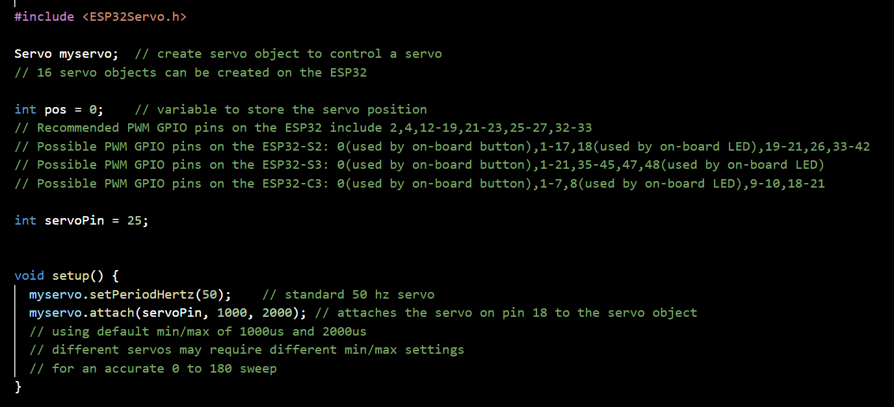
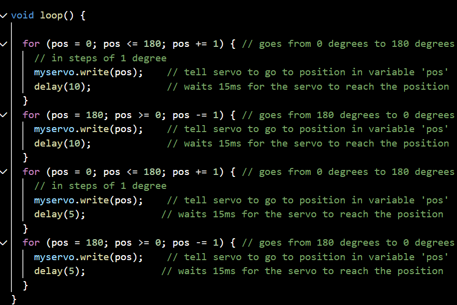

<div class="textcontainer">
<p class="margin"> </p>
<h3>Week 4: Microcontroller Programming</h3>
<h4>This week we interacted with a new kind of motor: the Servo motor. This motor had the peculiarity that instead
of solely controlling speed and direction, it could be controlled to move to a specific angle. This was done
through the esp32 microcontroller, which using a Servo library allowed us to set the angle and motion of the motor.
Since my punching mechanism did not require the DC motor's speed but rather the ability to move to a specific angle,
I decided to use a servo motor for this task.
</h4>
<h4>To learn how to program the servo motor I followed the follwoing tutorial: https://youtu.be/qJC1nt_eJZs from Science Buddies.
With this tutorial I produced the following circuit.
</h4>

<h4>After that I played changing the value for the delay function of the servo and realized that if the delay
was too small (less than 3) then the motor would move haphazardly since it was recieving more information than it could process.
</h4>
<video width="640" height="480" controls>
<source src="1.mp4" type="video/mp4">
</video>
<h4>Consequently, I augmented the delay value and appreciated a now steady movement (although obviously slower)
</h4>
<video width="640" height="480" controls>
<source src="2.mp4" type="video/mp4">
</video>
<h4>I opted at last for an intermediate value of 10 for the delay function. However, another difficulty presented itself
when I attached my previous mechanism to the servo motor: the distance between the fist and the supporting platform
was too small which made the punching mechanism unable to move freely and it was essentially breaking the platform:
</h4>
<video width="640" height="480" controls>
<source src="3.mp4" type="video/mp4">
</video>
<h4>Therefore, I had to redesign the platform to account for this change, I ended up elongating it. This
was easy since I just had to modify the fusion sketch and I ended up with this new mechanism:
</h4>
<video width="640" height="480" controls>
<source src="4.mp4" type="video/mp4">
</video>
<h4>Finally, I added some lines of code to the previous code to make the servo motor complete one 'fast' punch,
and one 'slow' punch. The 'fast' punch was done with a delay of 5, while the 'slow' punch was done with a delay of 10.
</h4>


<video width="640" height="480" controls>
<source src="5.mp4" type="video/mp4">
</video>
<h3>Key Takeaways</h3>
<br/>
<h4>1. Servo motors can be controlled to move to a specific angle, making them suitable for applications requiring precise positioning.</h4>
<br/>
<h4>2. Playing around with components before going straight into the final mechanism can unveil new useful functions or possibilites
that one can use to imporve their design.
</h4>
</div>